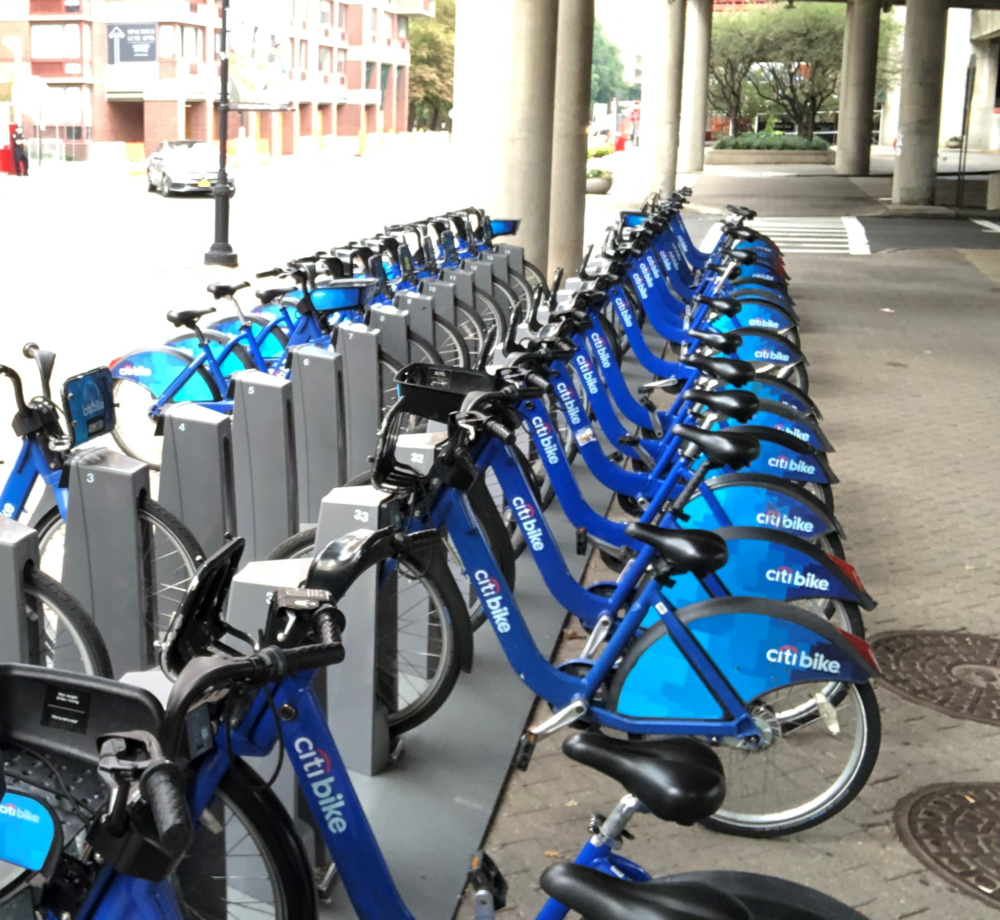

Chris' Cartoon version of himself
Working and Professional Student in NYC!
-> I like Biking in NYC.
New York is one of the most walkable cities in the world,
thanks in part to Manhattan’s grid-pattern layout.
But with more than 1,200 miles of bike lanes and routes
—many of which have been added in the past decade—
it’s also quite bike-friendly.
Two-wheeled transit is an increasingly popular and accessible way to navigate the City
while taking in some extraordinary vistas on your way.
Bonus for visitors: you can squeeze in more sightseeing in a shorter amount of time.

My email contact
2020 © Copyright Chris Narine - All Rights Reserved